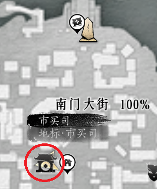
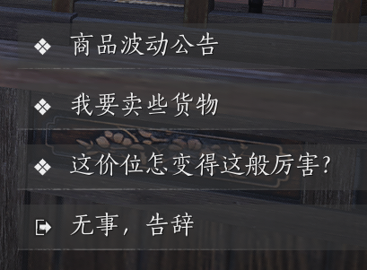
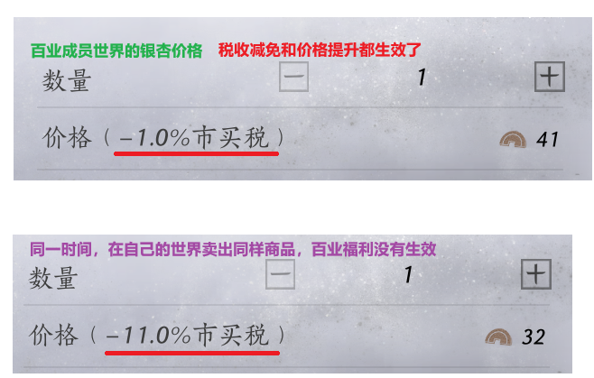
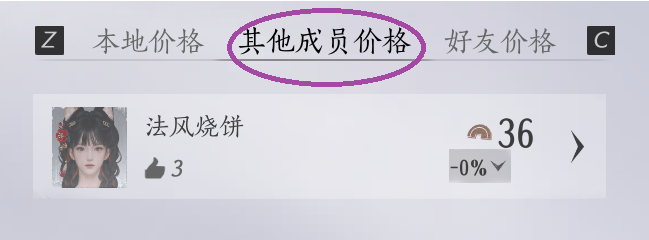
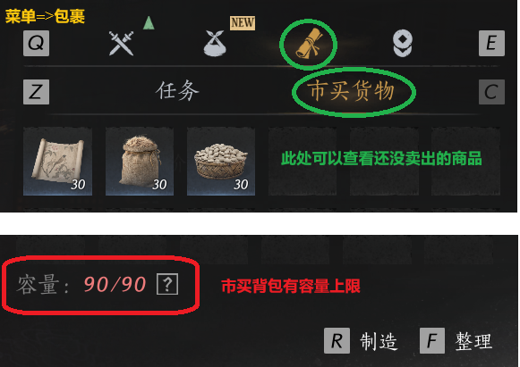

玩轉江湖
市買小攻略
你需要做市買玩法嗎？
如果你符合下面任意一點，這篇小攻略都適合你：
- 你是九流門的，需要每周賺越多越好的短陌錢來提升/保持門派地位。
- 你需要短陌錢買小攤食物/投票給你的梨園idol。
- 你需要賺短陌錢完成百業活躍度任務。
- 你就是想囤短陌錢，越多越好，管他呢。
- 你就是純好奇，進來看看攻略。
請注意，你需要解鎖開封地區才可以玩市買，還沒解鎖的需要把主線推進到開封噢。
什么是市買玩法？
每周，開封的市買司都會公布3種接下來一周價格浮動的、在開封販售的商品。玩家可以通過低價買入（原價）、高價賣出的方式賺中間的價格差。
市買司
以下為市買司所在地：

下圖為市買司NPC張祺越，跟他對話可以了解市價和賣出商品：

與張祺越對話：
- 商品波動公告：可以了解什么商品會有價格浮動，查詢世界其他玩家的價格信息。
- 我要賣些貨物：在所在的世界賣商品。（自己的世界就是本地賣，聯機進入別人的世界就是按照別人世界的價格賣。）

商品波動公告
下面2張圖教你看懂商品波動公告：
點擊圖片在新標簽頁打開原圖，可使用瀏覽器縮放調整查看比例。
市買背包
在菜單(Esc menu)->包裹(Bag)->任務(Quest)->市買貨物(Trading) 可以看到還沒賣出的商品。

請注意，市買背包是有容量上限的，默認上限是10。如果要提升背包上限，有兩種辦法：
- 加入百業，在百業技藝->經商致富中選擇背包上限提升，最多能提升20個商品容量。
- 在開封馮氏牙行（市買司隔壁），租賃房舍，提升背包容量。租賃多個房舍效果不會疊加，建議直接租最大的府邸。本人親測同時租3個府邸也沒有解鎖成就，大家不用試了。
- 大府邸：提升60 （建議只租這個）
- 中府邸：提升30
- 小房子：提升15
什么時候買入賣出？
注意以下時間標注的是刷新的時間，24小時之內都可以進行對應行動。
（注：價格刷新比游戲每日登錄刷新晚1個小時）
北京時間(UTC+8) | 美洲東部時間（EST/EDT） | 行動 |
|---|---|---|
每周六6:00AM | 每周五6:00PM EDT 每周五5:00PM EST | 商品/價格刷新，一周價格浮動開始。 進貨。 |
每周一5:00AM | 每周日5:00PM EDT 每周日4:00PM EST | 游戲一周刷新，庫存再次刷新。 可再次進貨，尤其是本地價格浮動商品。 |
周一周二 | 周日周一 | 價格較低，不建議賣貨。 |
每周三6:00AM | 每周二6:00PM EDT 每周二5:00PM EST | 高價開始出現，可以賣貨。 |
每周四6:00AM | 每周三6:00PM EDT 每周三5:00PM EST | 高價持續出現，盡快賣貨。 |
每周五6:00AM | 每周四6:00PM EDT 每周四5:00PM EST | 最后一天賣貨，必須清庫存。 |
每周六6:00AM | 每周五6:00PM EDT 每周五5:00PM EST | 上一輪的貨物賣出截至。進入下周循環。 |
百業經商福利
什么福利？
如果你有加入百業，并且有足夠的千奇玨（通過百業活躍度任務獲得），那么不僅可以提升背包容量，還能在百業成員的世界里面賣貨的時候獲得稅收減免和價格提升。注意這只對百業成員所在世界生效，不包括自己的世界。

百業市買玩法對應技藝：


怎么找百業成員賣貨？
去百業駐地找到下圖NPC“從不少”：

與從不少對話可以查看到百業成員的價格（需要背包里面有對應商品），也可以直接點擊成員發送消息或者聯機申請。

什么時候賣給百業成員更劃算？
我們一下的數學計算的前提是百業技藝加成點滿的情況：
- 售賣加成： +14.5%
- 稅收減免： -10%
另外，賣給其他玩家（包括自己）會有11%的稅收扣除。
以銀杏價格為例子：
銀杏價格浮動 （原價36） | 浮動后價格 | 其他玩家（包括自己） | 百業成員（福利拉滿） | 備注 |
|---|---|---|---|---|
0% | 36 | 36 - 36 x 11% = 32.04 = 32 | (36 x (1 + 14.5%)) x (1 - 1%) = 40.8 = 41 | 即便是最低的0%, 賣給百業成員也不虧錢。 |
113% | 41 (40.68) | 41 - 41 x 11% = 36.49 = 36 | (41 x (1 + 14.5%)) x (1 - 1%) = 46.48 = 46 | 113% 以上賣給非百業成員也不虧了。 |
236% | 85 (84.96) | 85 - 85 x 11% = 75.65 = 76 | (85 x (1 + 14.5%)) x (1 - 1%) = 96.35 = 96 | 236%以上的百業成員就比300%的其他玩家利潤大了，可以參考下一行。 |
300% | 108 | 108 - 108 x 11% = 96.12 = 96 | (108 x (1 + 14.5%)) x (1 - 1%) = 122.42 = 122 | 300%其他玩家 =236%百業成員 |
賣給世界玩家不虧的算法：
假設商品入手價為Y，我們要求的是價格漲幅到X%的時候，賣出的價格扣除掉11%的稅收仍然大于等于Y，那么按照這個要求我們列以下公式（此處 * 為乘號）：
Y * X% - (Y * X% * 11%) >= Y
兩遍公式簡化可得： X% >= 1 / (1 - 11%)
所以 X% = 112.36%，向上取整 (ceiling) 113%
賣給百業成員的話，浮動百分率多少才比300%高？
假設商品入手價為Y，我們要解的是，百業成員價格浮動大于X%之后，比賣給世界其他玩家300%要更高。那么可以列一下公式（此處 * 為乘號）：
Y *300% - (Y * 300% * 11%) <= (Y * X% * (1 + 14.5%)) * (1 - 1%)
